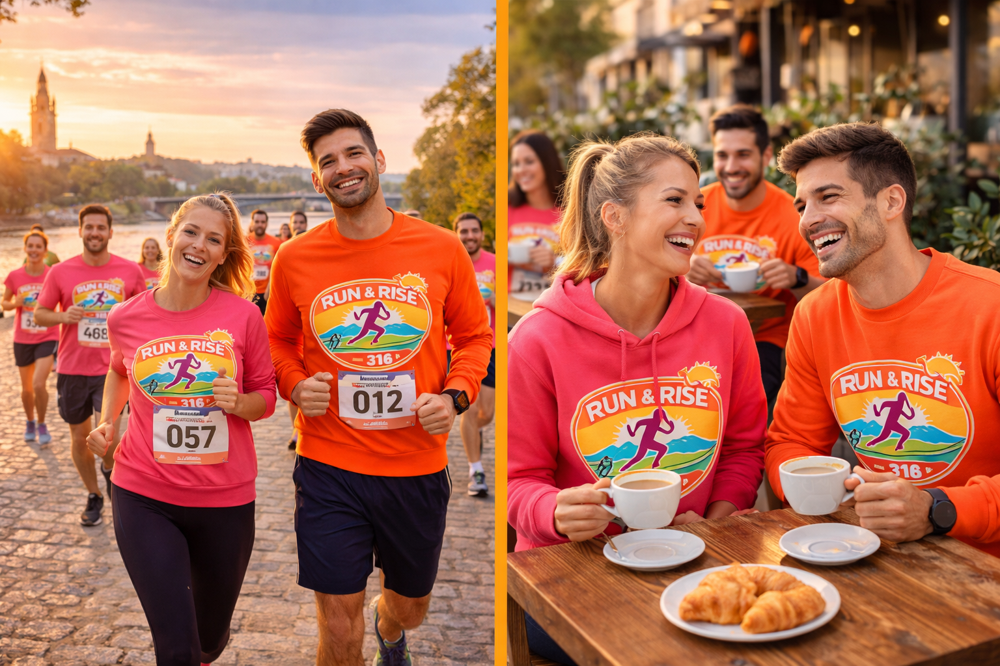

Nuestra cita fija para sudar, charlar y arrancar el fin de semana con la mejor energía.

La Quedada Semanal de Run & Rise Club es el corazón de nuestra comunidad. Durante esta hora y media de evento, no solo salimos a correr; construimos amistades, compartimos progresos y disfrutamos del aire libre por las localizaciones más bonitas de Sevilla.
Dividimos la sesión en tres partes: un calentamiento articular grupal para empezar con buen pie, unos 45-50 minutos de carrera donde nos separamos en tres grupos según ritmos (para que nadie se quede atrás ni vaya forzado), y por último, un estiramiento conjunto dirigido por nuestra entrenadora Laura.
¡Ah! Y lo más importante: después de sudar, la tradición marca que nos vamos directos a por un café y una tostada para reponer fuerzas todos juntos.